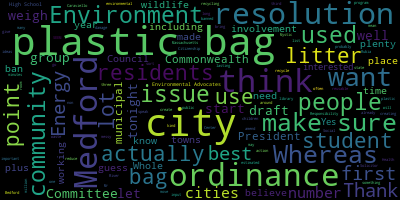

AI-generated transcript of Medford, MA City Council - Jan. 30, 2018 [Livestream] (Unofficially provided by MT)
English | español | português | 中国人 | kreyol ayisyen | tiếng việt | ខ្មែរ | русский | عربي | 한국인
Back to all transcripts
Heatmap of speakers
[Unidentified]: Thank you very much.
[Caraviello]: Good evening, Medford City Council, fifth regular meeting, January 30th, 2018. Mr. Clerk, please call the roll.
[Clerk]: Vice President Del Russo. Present. Council Falco. Present. Council Knight. Present. Councilor Graham.
[Unidentified]: Present.
[Clerk]: Councilor Marks.
[Unidentified]: Present.
[Clerk]: Councilor Scarpelli.
[Caraviello]: Present. President Campbell. Present. Please rise and salute the flag. United States of America, and to the republic for which it stands, one nation, under God, indivisible, with liberty and justice for all.
[Dello Russo]: Vice President Dello Russo. Motion for suspension of the rules to take one paper, third reading of the Medford Police Patrolman's Union contract.
[Caraviello]: Thank you. On the motion by Vice President Dello Russo to take 18-066 under suspension, seconded by Councilor Knight. All those in favor. Communications from the Mayor. Dear Mr. President, City Councilors, I respectfully request and recommend that your Honorable Body approve special budgetary transfer in the amount of $120,000.00 from the Police Full-Time Salaries Account 010-210-5110 to funds $60,000 to Police Vehicle Repairs Account 1010-210-5241 and to fund $60,000 to the Police Medical Account 010-210-5307 to cover outstanding and projected bills throughout the end of the fiscal year. Police Chief Leo Sacco, Finance Director Lucius Benjamin are present to answer any of the councilors questions regarding this matter. Sincerely, Stephanie and Burke Mayor. Mr. President.
[Dello Russo]: Vice President Del Russo. My request was to take from Unfinished Business, my apologies, 18-019. Well, we started this one, let's finish this one. Thank you.
[Caraviello]: approval. On the motion by Councilor Dello Russo, seconded by Councilor Knight. Mr. Clerk, please call the roll.
[Marks]: Good evening, Chief.
[bCMsj8WYK14_SPEAKER_30]: Good evening, Mr. President, members of the council. I'm Leo Sacco. I live at 227 Elm Street in Medford and I'm chief of police. We had a budget shortfall this year in our medical account. We had Requested $100,000 for that account that we received $60,000 We're pretty much through that $60,000. We've had a year where we've had a number of injuries to offices many of those injuries resulting in surgery surgical procedures that we've received quite large bills on, and we anticipate going forward that we have, at least at this time going forward, in about the next month to six weeks, about $30,000 more that we will incur. We anticipate these bills coming forward. Our third party claims administrator is doing the best they can to knock some of the prices down, negotiating with doctors, hospitals, and other medical facilities. One of the big ticket items is always the physical therapy after the surgery. So we really do need that $60,000 infusion. The other $60,000 infusion is into motor vehicle repairs. As you know, we received new vehicles this year, but we still have a number of old vehicles that are in need of repair. constant repair, they're running 24-7. Some of the new vehicles, we had to pay some additional money outside of the free cash that we were allowed last year for some of the upfitting. New radios were placed in the cruises, so just about everything that's in those new vehicles is brand new. We weren't able to transfer much of the equipment from the older vehicles. So there was a bit of a shortfall there, so we're requesting the $60,000 for that account as well.
[Marks]: Councilor Marks. 60,000 requests for transfer for the medical. Will that, do you anticipate that taking us to the end of the fiscal year?
[bCMsj8WYK14_SPEAKER_30]: I would like to say yes, but I have been wrong so many times before trying to guess on medicals. I'm hoping that it will. I can't say that it will.
[Marks]: So we may be providing additional transfer towards the end of the year for that particular one.
[bCMsj8WYK14_SPEAKER_30]: We may be requesting that. And I believe there will be some additional salary money to transfer in there because it's so late in the year. We haven't been able to hire the new offices. We anticipate hiring a number of offices very soon. But the only available academy, the soonest we could get them into an academy is, I believe it's March 5th is the start date. So the process was delayed because there were no academies available. So we have money that's allocated for those salaries.
[Marks]: Okay, and with the purchase of the new vehicles we received, do we anticipate a reduction in the vehicle maintenance account or?
[bCMsj8WYK14_SPEAKER_30]: If the winter is kind to us, I'm hoping that we can get through this winter without any other major repairs. Our wagon just had to have a new transmission, and that was about $3,000 before labor. So,
[Marks]: Things do age they get used and they have to be replaced And if you could just explain briefly what makes up the hundred twenty thousand in these salaries account. Why do we have
[bCMsj8WYK14_SPEAKER_30]: Well, the money that was budgeted for the additional offices, those five additional offices, I believe at budget time we anticipated retirements. Right now we have a few more vacancies than we anticipated, but we weren't able to hire the people in a timely fashion because there were no academies available and we had to wait for the new list to come out of civil service. We received that list in, I believe it was late November. We've completed the background checks, the medicals, the physicals, they've received conditional offers of employment. Now we're waiting for the March 5th academy start date.
[Marks]: So so chief, we had this discussion over the last several years, knowing that it takes many months for the academy to get an officer trained and finally on the street. And it's increasingly difficult to get a seat in the academy in that. I thought we were as a community going to start to at least have a recommended two or three seats per year that we can count on within an academy so we don't have to scramble trying to find one.
[bCMsj8WYK14_SPEAKER_30]: The problem with the academies is that the state requires, the Municipal Police Training Committee requires that we have a name to go for the seat. They will not reserve seats without a name. So we have to have a person already screened and ready to go before we can even request a seat. By doing it that way, the door is almost closed on us because everyone else has been ahead of the curve. They may have waited a year themselves to get that seat, to get that person in place. The Transit Police Academy does not require that. We are sending the first five to that academy March 5th. There's another academy that's at Northern Essex Community College. I believe that's a May date for that, and they don't require the name in advance. The mayor has been kind enough to allow us. We initially requested 10 officers for the reserve list. She's allowed us to go to 13, because we found 13 great candidates on that list that we have. So we'll have a field of candidates to pick from. By having that reserve list in place that this council passed a few years ago, that allows us to do exactly what you said. We have a team that we can send to an academy when a seat is available and when we have a vacancy in the department. So that is working. It's just been slow getting this one off the ground. Like I said, this new exam took place last March. The marks came out probably September, October. The list was certified in November. We received it, and background checks were going on from that point forward. So we will have 13 people on a reserve list, five of which will be sent right off to an academy.
[Marks]: So, so the hope is that next year's fiscal budget, there'll be an additional appropriation for offices is that I'll be requesting more offices.
[bCMsj8WYK14_SPEAKER_30]: The last two years we've been budgeted for 107 total. I'll obviously be requesting more, but if we can even stay at the 107, at least we'll be able to replace as we have retirements, and that was the goal. We looked at our roster, and we know that by 2020, there'll be 20 retirements. And that's not anticipating any of the others that may go sooner. We just had two offices that I didn't count on retiring this year at July 1st when we started this new budget, but they were already retired.
[Marks]: And I also heard just through the grapevine there is a number more that will be retiring this year.
[bCMsj8WYK14_SPEAKER_30]: You probably heard that. That's what I'm saying. Between now and 2020. I'm talking within this year.
[Marks]: that I've heard numbers of six, seven retirements.
[bCMsj8WYK14_SPEAKER_30]: Could very well be. That's why I'm saying the 13 people on the reserve list. Once we start chipping away, we'll request another list, put more people on that reserve list so we can pull up for an academy as soon as we can have an opening.
[Caraviello]: Okay, thank you, Chief. Move for question. The motion by Councilor Dello Russo, seconded by Councilor Scarpelli. Mr. Clerk, please call the roll.
[Clerk]: Vice President Dello Russo. Yes. Councilor Falco. Yes.
[Caraviello]: Yes, affirmative negative motion passes. Thank you. Thank you. Thank you for the third reading as well. Thanks. And while we're on dispensary, we're going to take unfinished business 18019, which will be taking its third reading this evening. on the motion by Councilor Dello Russo that the patrolman salaries take its third degree, seconded by Councilor Knight. Mr. Clerk, please call the roll.
[McGilvey]: Good evening, name and address of the record, please. Harold McGilvrey, 100 Main Street. I'm here representing the Medford Police Patrolmen's Association. I thought that I would talk after. I didn't know how this works, I'm sorry. I just appreciate the council's support. The council has always been supportive of the Patrolmen's Union over the years. We appreciate the support. We appreciate Mayor Burke getting this done. We always say that a negotiated settlement is better than a settlement from an outside source, an arbitrated settlement. And the mayor got involved. just before Thanksgiving and things went really smoothly and we thank her for her efforts. This is the third time we've been able to negotiate a settlement on our contract with Mayor Burke and thank you to Chief Sacco. Chief, over the years, has been a better mediator than anybody the JLMC has ever sent out here to try to mediate these disputes. He really does a good job when we hit that stalemate. He just has a knack to be the go-between, and we've gotten a lot of things done over the years with that, through Chief Sacco's leadership, and we are gonna miss him. towards the end of the year when he does retire. So thank you, Chief. Thank you, Chief. And thank you for the third reading.
[Caraviello]: Thank you. On the motion by Councilor Dello Russo, seconded by Councilor Knight. Mr. Clerk, please call the roll.
[Clerk]: Vice President Dello Russo. Yes. Councilor Falco. Yes. Councilor Knight. Yes. Councilor Locker. Yes. Councilor Marks. Yes. Councilor Scapelli. Yes. Vice President Cavanaugh.
[Caraviello]: Yes. Seven in the primitive, none in the negative. Motion passes. We have one more comment. 18604, petition for a common fixture license by George Papadogiannis. And Nectaria Rogatus, 158 Waverly Avenue, Watertown, for G.N. Papa Corporation, doing business with pizza and roast beef and subs, 151 High Street, Bedford, Mass. The licensing chairman, Councilor Scarpelli,
[Scarpelli]: Thank you, Mr. President, and welcome. And as I go through these, the paperwork looks like everything's in order. I know that the Board of Health had mentioned that there'd be a thorough cleaning. Absolutely. And so the business itself isn't doing a major change, but the question is the time. We know about your closings and everything's in order?
[SPEAKER_01]: We plan to, basically, I spoke with Melanie with the Board of Health, and because it's our first business, she recommended that we stay closed once we receive the paperwork, the past the papers, so that way we can make those changes, make sure everything is clean, meets the standards and everything, and once we get the approval of everything's where it needs to be, then we would like to open up. And your business hours? As of right now, I want to say they're going to be from 11 to 10 o'clock Monday through Saturday. Delivery, is that part of that? Delivery is still going to stand, yeah.
[Scarpelli]: Okay, so I find everything in order, Mr. President. I move to accept this grant petition. Thank you.
[Knight]: That's a knife mr. President. I second the recommendation of the licensing check Jim and it's a family business The gentleman's worked in the family business. That's my understanding. He's taken over for debt So with that being said we all know roses right there right next to the old paint box It's a good establishment has been around a long time, and I wish him the best of luck.
[Lungo-Koehn]: I support this transfer wholeheartedly I think my question may have been answered president Caraviello, but the opening date is
[SPEAKER_01]: It was supposed to be February 21st, but after seeing the condition and everything, we would like to fix the problems that are gonna help us proceed, rather than open up and then get shut down. So we wanna make sure everything is fixed and where it needs to be, and then once we get the approval, we would like to open up. Okay, good luck. Thank you, appreciate that.
[Dello Russo]: Councilor Dello Russo. Mr. President, if I could, through the chair, wish you both good luck. And I'm glad you're going about this in a good way. So we wish you the best and much success.
[Caraviello]: Appreciate it. Thank you so much. Thank you. The motion by Councilor Scapelli, seconded by Councilor Dello Russo. All those in favor. Motion passes. Good luck and hope to see you. Thank you. Appreciate it. Motion by Councilor Knight to be referred back to regular business. Motions, orders, and resolutions. 18063, offered by Councilor Falco. Motion by Councilor Knight to waive the reading and allow the sponsor to give us a synopsis. Councilor Falco.
[Falco]: Thank you, Councilor Caraviello. Thank you, President Caraviello. I will actually read this so everybody can hear it. Whereas the City of Bedford has long been a municipal leader in the Commonwealth of Massachusetts in environmental stewardship, including creating the first municipal climate action plan, erecting the first municipal scale wind turbine in the state, installing solar panels in energy efficient LED lighting, among other initiatives. Whereas the city of Medford is blessed with nearly one-third open space with its 8.6 square miles, including the Mystic Lakes, Mystic River, and Wrights Pond, which provide valuable habitat for wildlife and recreational opportunities for residents. Whereas millions of non-biodegradable plastic bags are used in Medford each year, creating litter, polluting our streets, parks, and waterways, harming wildlife, and potentially causing harm to human infants. Whereas plastic bags are difficult to recycle and frequently contaminate material and damage equipment used to process items collected through the city's single stream curbside recycling program. Whereas reusable bags are considered to be the best option to reduce waste and litter, protect wildlife and conserve resources, and that many inexpensive and convenient varieties are increasingly available and used by Medford residents and visitors, whereas a number of businesses in the city have already taken affirmative steps to encourage the use of reusable bags by their patrons. Whereas 61 cities and towns in the Commonwealth, including neighboring Somerville and Arlington, and nearby Cambridge, Boston, and Melrose have enacted ordinances governing the use of plastic bags in their communities. Be it resolved that the City of Medford, working with the Medford City Council, the Energy and Environment Health and Law Departments, the Energy and Environment Committee, SEEM, Student Environmental Advocates of Medford, the Medford Chamber of Commerce and city merchants and its citizenry create an ordinance that will govern and ultimately phase out the use of plastic bags at all points of sale in the city to decrease damage to our environment, reduce litter and waste removal costs, and improve public health without being detrimental to conducting business in our city. Mr. President, if I may. Thank you. Tonight I offer this resolution because I believe it is an important issue that has a deep and lasting negative impact on our city, its residents, and our environment. There are many reasons why we should ban plastic bags. I'll name a few but there are plenty. Plastic bags create a major litter problem. Visual blight when they blow into trees. They're the third largest type of litter from land-based sources found on U.S. coasts. They pollute our oceans, rivers, and landscapes. Plastic bags are a hazard to marine life, seabirds, animals. Plastic bags do not biodegrade, and although they do fragment through mechanical action and photodegradation in the presence of light, these processes are slow, taking an estimated 200 plus years to complete. Polyethylene bags are made from non-renewable fossil fuels. The over 100 billion plastic shopping bags used each year in the United States are made up of the estimated equivalent of 439 million gallons of oil. Plastic bags clog storm water drains. They're consumed in extremely high volumes. Consumers, more often than not, do not recycle plastic bags. Plastic bags contribute to overburdened landfills. While researching this issue, and I mentioned this earlier, plastic bags are banned in over 60 plus cities and towns in the Commonwealth of Massachusetts. Plastic bags are banned in over 40 countries. It is time that we add our city to the list of the 60 plus cities and towns that have ordinances that ban plastic bags. Recently, I was approached by individual residents, organizations, and students with regard to offering a resolution to banning plastic bags in our community. At Medford High School, we have a great program called the Center for Citizenship and Social Responsibility. Within the Center for Citizenship and Social Responsibility, we have seen student environmental advocates of Medford. This group has been working hard on this issue and other environmental issues along with the Energy and Environment Committee as well. Surveys have shown that plastic carryout bags are used for approximately 12 minutes and then discarded. With that being said, we need to evaluate if we as a community value the use of a plastic bag often used for a few minutes more than protecting our environment from the devastating long-lasting effects of plastic bags. As a father of three children, it is my hope to leave this community a better place for our children and our grandchildren. This is a start. Let's use this resolution tonight as a launching pad to develop a city ordinance to ban plastic bags in the City of Medford. I thank you for your time and I respectfully ask my colleagues for the consideration And I believe that we should move this to the subcommittee on ordinances, where we can have an ordinance developed and designed. And if I may, Mr. President, I'd like to amend this resolution. And I'd like to amend it until we actually get an ordinance in place. I'd like to see the city set up plastic bag recycling stations in each of our public buildings, City Hall. the library, we can come up with a list. But I think that we should do that to actually at least get the ball rolling until we actually have a formal ordinance in place. At this point in time, I know there are a number of people that would like to speak on this issue. If I could bring up Rubia, who is from the library. for Medford High School, and she has a number of packets that she'd like to give out as well. She's from the Student Environmental Advocates of Medford.
[Caraviello]: Good evening. Name and address of the record, please.
[SPEAKER_00]: I'm sorry?
[Caraviello]: Name and address of the record, please.
[SPEAKER_00]: 24 Wright Avenue, Medford, Massachusetts.
[Caraviello]: Speak up so we can hear you.
[SPEAKER_00]: 24 Wright Avenue, Medford, Massachusetts. Thank you. Good evening City Council Members. My name is Ruby Fernandez and I am a junior at Medford High School. There I am a member of the Turtles and Salamanders Club, the Students Environmental Advocates of Medford, and the Center for Citizenship and Social Responsibility. I personally care about the environment a lot and have taken notice of the actions that other communities took to reduce the amount of waste that they emit into the environment, which is why I chose to begin the petition that I present to you now, showing the major support that there is behind this issue. Plastic in general has only been around for about a century, but it has already affected our environment greatly. With 300 million tons of plastics produced globally each year, only 10% of that is recycled, and an estimated 7 million tons end up in our oceans. The average decomposition rate of the toxic material is 450 years, but some specific kinds can take up to 1,000 years to biodegrade. The material can often be confused as food by marine life, and as it breaks down into smaller fragments, it's ingested by more organisms, thus moving up the food chain and eventually reaching our own food supply. There are many ways that we can minimize the emittance of this toxic material into our environment. In Medford were to have their own plastic bag ordinance, we would join the other communities who have made similar efforts, including, but not limited to, Boston, Somerville, Cambridge, and Wakefield. By having retail stores that currently give out a checkout bag for a customer's purchase, requiring them to charge a minimum for each provided bag, these charged bags would also have to be of reusable, recyclable, or compostable material that can be 100% recycled and were already manufactured with at least some recycled material. The petition that is in front of you now gained 500 supporters in only under a month and continues to grow to over 600 supporters. As of right now, there are a number of people throughout the community that are in support of this petition and this ordinance coming into place in Medford. Thank you.
[Caraviello]: Good evening, name and address of the record, please.
[Alicia Hunt]: Good evening, Alicia Hunt, I'm the Director of Energy and Environment for the City of Medford, and my address is 41 Wasson Street in Medford. And the mayor asked me to come this evening and just express her pleasure that the students and the residents of Medford have shown such strong support for this environmental measure, and to let you know that she is very much in support of this, and the administration would be happy to work with people on crafting an appropriate ordinance for the City of Medford.
[Caraviello]: Thank you.
[Dello Russo]: Thank you. Mr. President, thank you. I'm grateful to Councilor Falco for his leadership in this matter and the enthusiasm shown from so many of our citizens. I've received a number of communications over the past week showing that there are many people in favor. I have also shown some that are not so enthusiastic about this. But I look forward to examining this measure in detail in committee and hearing the input of so many leaders from the various organizations and departments that have been outlined in this finally written resolution. Thank you.
[opOzyZvPRK0_SPEAKER_29]: Name and address of the record, please. Thank you. My name is Curtis Tooden. I live at 72 Bonner Ave. And I'm here representing the Medford Energy and Environment Committee. I also advise the student environmental club at Medford High School. And I want to thank the Councilors for taking up this issue and for the students taking on this leadership role and helping bring about an issue that would make a real difference for our environment. A lot of great points have already been made, so I'll just clarify what's in the packet for everybody. The first is a cover sheet that shows all of the Massachusetts cities and towns that have currently passed a plastic bag ordinance into law. So you'll notice some towns like Boston and Arlington aren't listed, and that's because they recently passed their ordinances. So a point of clarification there. On the back are three sample ordinances, and those are taken from a list of, it's really a spreadsheet of 60 municipalities in Medford with their ordinance, how the ordinance is enforced, And it's all just for your consideration. It's followed up with a frequently asked questions sheet that explains everything you need to know about plastic bags and why we should have an ordinance in Medford. And like I said, thank you for taking this under consideration. I can answer any questions that you have right now or we can open it up to other residents in the community who are representing other environmental organizations and just other concerned citizens. Thank you.
[Joe Viglione]: Good evening. Name and address of the record, please. Hello. Joe Villione, 59 Garfield Ave., Medford, Mass. When you go shopping, what I find very distressful, especially as someone who likes to recycle, they force these bags on you. So if you're buying a bottle of orange juice and groceries, they take one bottle of orange juice, throw it in a plastic bag, and then It's crazy. So you walk up with like six bags that you really don't need. You can consolidate. But before you even get a chance to say anything, I don't understand being business people, why they want to buy a product and then just get rid of it so quickly. It makes no sense. So they don't train the people in the grocery store to conserve the bags. They're all over the place. I try my best. And you know that waste management doesn't want us recycling them, but you can take an old plastic, uh, orange juice, uh, the bottle, and you can put the plastic bags in there, and then you can put the cap back on it, and waste management can't complain because it's not gonna get into their machinery, and that is their problem. It's the machinery with the waste management. So I'm all for this, Councilor Falco, good work. Onward. Thank you.
[Caraviello]: Good evening, name and address of the record, please.
[SPEAKER_19]: Hi, my name is Randy Rogin, 63 Lincoln Road, Medford. I've lived here for 15 years, which I think probably still makes me a newcomer, but I just want to share a little bit about why I'm here. I'm the mother of two children. I'm a board member of the Friends for the Fells. I'm a member of Women Working for Oceans, W2O, and I have a PhD in biology. I'm currently a professor at Boston University, and I've been here forever because I did my graduate work at Tufts, stayed at Harvard, and now I'm at BU. Most importantly, I'm an ocean scientist. I study temperate, tropical, and deep-sea corals. I examine coral reef resilience to a number of stressors, mostly climate change, but also local pollution. Recently, I was awarded a grant entitled, Hidden Problems in Secret Corals, Exploring the Microplastic Abundance in Local Temperate Corals Along Our Coastlines. I was looking for microplastic fibers. I don't even know if you know that we have corals here in Massachusetts, but we do. And what we found is that each coral, on average, can actually contain over 100 microplastic fibers. For a coral this big, each one has over 100. They are eating plankton and plastic particles just like oysters, mussels, everything else that filters our seas and helps to clean them. But while they're eating plastics and then we eat them, we are also eating plastics. It wasn't really until I started working on this issue in my own laboratory that I saw the inescapability of this issue. Plastics are everywhere and in the most remote parts of our planet, in our deepest oceans, in the atmosphere, and in the soil. Enacting a plastic bag ordinance is a really important first step, but I think it's important to also mention to this body that it won't fully solve the problem. But in my professional view, here are the four or five things that I think it will do most urgently. First, it will put the plastic issue front and center in the public eye, which will help to foster the necessary awakening that must happen to secure the health of our planet and ourselves. It'll help to curtail one of the most obnoxious plastics in our society, bags that are used for mere minutes. but that can actually last for centuries, and that are made from materials that took millennia to form. It makes absolutely no sense. And the studies that show, there are lots of studies that have shown so far that from the ordinances that already exist, for example, in California that have been enacted for a few years, that these are successful, both in changing corporate and consumer behavior. And I've given you a handout that shows on the backside a few tables from those studies. The benefits to marine, aquatic, and terrestrial life are immediate. Currently, my bedroom window faces out over a beautiful maple tree that belongs to my neighbor that has had the same plastic bag stuck in it for over four years. The leaves on that part of the branch don't grow, it's ugly, and it's a constant reminder of the longevity of each and every bag. As a board member for the Friends of the Fells, I can tell you that we have our plates full. Even with our wonderful trail adopters program, we can't possibly remove every plastic bag from the forest. An ounce of prevention is worth a pound of cure. And as an ocean scientist, the data are unignorable. I've seen with my own eyes and picked up with my own hands plastic debris from every single tropical ocean on this planet, and more locally here in Boston Harbor. I've seen bags floating side by side with jellies, and I've shown you a picture of what that looks like on your handout. And I can tell you that even I've been fooled. When the bags have been floating for a while and they start to rip, you can't tell. I can't tell. whether what's jelly and what's a plastic bag and tell them right on top of it. Sea turtles, sea birds, they're also fools. A paper was just published this week in the journal Science by my peers and former mentor, linking plastic waste with coral disease. There are currently between 6,000 and 245 million metric tons of plastic in the oceans right now, with five to 12 million metric tons of new plastic entering the ocean annually. The North Pacific garbage patch is no longer unique. Now there are garbage patches everywhere. So back to the big issue, recycling plastic bags is a really good idea, but the studies are showing that it hasn't worked. I think it's a good short-term measure, but I want to just mention that only 3 to 10% of plastic bags out there are actually recycled worldwide. Most are discarded, and 90% of them are discarded after only a single use. And Americans use roughly 300 plastic bags per person per year. And if that number seems high, think of it this way. The average family goes through 15 bags per trip to the grocery store. And it costs us money to make them, to recycle them, and a huge amount of labor to hand-remove them from recycling sorters where they gum up the works of standard stream recycling. They have to be recycled separately. So I've actually also shown you a picture of that in your handout about how they have to be hand-removed from sorters after just an eight-hour shift. All of this for bags that we use once for 10 to 12 minutes. I think we can do better. As a mother, I don't want my children to live in a world wrapped in plastic. Joni Mitchell said it right when she said, you know, we paved paradise, put up a parking lot. I don't actually have a catchy lyric for you, but we're double bagging the world, and I think it's time to stop. So thank you for listening.
[SPEAKER_02]: Good evening, name and address of the record, please. Yes, sir. Matt Palumbo, 180 Harbor Street, Medford. Good evening, Mr. President. Good evening, council members. Thank you for having me here. As a Medford resident, as a Marine Corps veteran, as a graduate student at the Fletcher School, and as a volunteer with the Surfrider Foundation, I wanted to come here tonight and express my support for the high school students and the wonderful job they did. As someone who takes public service seriously, I know what that looks like, and that's what it looks like. And I think it's incredible, I've never actually seen anything like that before. I volunteered for a while when I used to live in California and I just want to put my support behind their efforts and I also want to put Surfrider's support behind their efforts at all. Surfrider, if you're not familiar, is a non-profit environmental organization. We advocate for causes just like this. Something that hasn't been touched on tonight are the economic impacts, the economic arguments that people make against these type of ordinances. I feel like that's really important to bring up, and so that's where I want to lend my support. I don't have it printed out, but there's a report called the Equinox Report by the Equinox Center, and in 2013, they published this report to answer some of your more common questions about the economic impacts of these bag bans. I can certainly forward that to you, and I would like to send that electronically to Councilman Falco if I may. So the idea is to possibly prevent some of the pain that goes with going down this path. As other people have said, we're the 61st and 62nd town in Massachusetts to go down this route. So if I can alleviate some of the issues, I'd certainly like to do that with some of this information. Furthermore, I think something that often gets downplayed is the support and the different aspects of the ordinance. So as a surfrider and personally, I support an ordinance that does not differentiate between suppliers of these bags, regardless of their type or their size. People counter that and they say, well, this hurts small businesses. So I'd like to read an excerpt from a small business in Somerville. As you all know, Somerville just passed their ban about a year ago. And this is from a gentleman in Somerville, Porter Square. My business has not been adversely affected by the bag ban over the past year. It has not been an additional burden for my business or clients and has not represented an undue hardship on our bottom line. People in Somerville have adjusted over the past year and begun using reusable bags. Which brings me to my next point. The definition of reusable bags. It's really important in this ordinance that we think carefully about how we want to define reusable bags. Otherwise, you just end up with these super thick, super large bags that get deemed reusable, and now you just have more stuff in your waste stream. It costs more money to fix it, and it's just not the route you want to go down. So the phrasing of this ordinance is important. Which brings me to my last point, which is I advocate for establishing a mandatory uniform fee for recycled paper bags and a mandatory minimum charge for reusable bags. Again, the reasons behind this are in the Equinox Center report, and people look at this and they say, well, this is gonna target low-income households more than the average person. The report found that over the first year after a bag ban, your average household spent $7.68 buying all the reusable bags they need for the year. not a lot of money, but you can still make an argument, why are we putting on due costs? So if you don't wanna go that route, you can certainly do a bag giveaway. Some towns do that within the first year to two years of the plan as well. So again, I'd like to share that report with you all at some point, but I do thank you for having me here tonight, and again, thank you for the high school students. Thank you.
[Caraviello]: Good evening, name and address of the record, please.
[SPEAKER_18]: Susan, sorry, Susan Altman, 201 Winthrop Street, Medford. I've been a Medford resident for 28 years, graduated from Tufts in environmental policy in the 90s, and have been on the Medford Energy Committee, was one of the founders of Green Medford, and several other environmental efforts in the city. My current job position is managing editor for an academic journal published by MIT Press called Global Environmental Politics. I just want to add something from the news that you may not otherwise think about that I think is also an important consideration at this time. China has recently announced severe restrictions on plastic waste that they will take from other countries. They have, up to this point, taken 45% of all the waste that the United States has created, plastic waste, and that will probably drop precipitously, leaving very little of a market for plastics that are already marginal, of marginal economic value in this country for the recycling stream. So what this will effectively do is cause much more waste to get into our environment, cause more litter, cause more potential harm to animals, and just generally be a bigger and bigger problem as time goes on, and we create more and more waste. So this is a great time to be thinking about it, and I'm happy to pass on to Councilor Falco and anyone else who's interested, some sources for the China information, if you're interested. Thank you.
[phPK_rgTxTg_SPEAKER_28]: Good evening Tom Lincoln 27 and Gleason Street and Snowy Medford first I want to say how impressed I am by our high school students It's been marvelous to see them working on this how they've grabbed this issue and run with it this evening I've been involved in recycling in Medford for a long time, first with the drop-off recycling in the 90s, then the small curbside bins, if you remember those, and finally as the head of the Trash and Recycling Commission when Medford adopted its current containerized system. The City Council has been supportive all along the way, and I hope they will continue this excellent track record by adopting, and quickly adopting, a plastic bag ordinance. A little personal experience here, I shop at Market Basket in Somerville for their excellent prices and charming parking lot. I have watched their transition in the last while to a plastic bag-free system. At first, a lot of people took the paper bags that they supply, but now almost everyone seems to bring in reusable cloth or vinyl bags, sometimes a whole pile of them, and no one complains and things move along quite nicely. It's a very busy store if you've ever been there. And I have to say, I bet Market Basket itself has saved a bundle and spends less time picking up bags in their charming parking lot. I also imagine that the biggest purveyors of single-use bags in Medford are probably Stop and Shop and the new Wegmans. But I would note that both these stores also operate in cities with bagged ordinances. Wegmans in Newton, and Stop and Shop in Arlington, and I think some other places. I don't go to Stop and Shop. Arlington, by the way, passed their ordinance last April on a vote of 188 to 21, which I thought was interesting. This is a straightforward proposal. There's some details to work out, but we have the guidance from 60 other cities and towns. It's simple, it's practical, and it will have real practical impact on our local, regional, and environment. I think it's time that Medford join these other 61 cities and towns and looking forward to progress. Thank you. Thank you.
[Krause]: Good evening, my name is Ken Krause. I live at 50 Mystic Street in Medford. I'll try not to repeat what has been said much or all of which I agree with. I want to thank Councilor Falco for this resolution, which I support. I think the key to the success Will be what's spelled out in the last paragraph where Councilor Falco lists all the different constituents and stakeholder groups that have a lot that they can offer toward crafting a resolution or a ordinance that works for everyone in Medford and You know, I think what we're really looking at is, this is almost an interim step, what we're really looking at is more of a societal or a cultural change, much like has already occurred in other parts of the world. where we eliminate this habit of ours of using bags that are supplied at the point of sale. And we use other bags that we bring or store supply that can be reused. I'm old enough to remember when we didn't have alternatives to paper bags. So that's all we had when we shop. But now we've got little bags, you know, as small as this that can fit in your pocket. fit in your glove box, if you're driving, can easily be utilized for just about any kind of purchase that you need. So it's just more of a factor of getting in the habit of using these instead of the bags that we've gotten so accustomed to having at the checkout. And as was mentioned, this is hugely economically beneficial for the retail establishments. They currently spend thousands, tens, hundreds of thousands of dollars purchasing these bags, storing them in their warehouses, hiring employees to take them out of the packages and put them out in the checkout lanes, and then giving up space in their floor to have bins where people can bring them back and then paying people to empty the bins and take them to the recycling pickup area and paying someone awfully oftentimes to take these bags back. So they're very supportive of this changeover. That's why we see places like Whole Foods actually Giving you five cents off your purchase if you bring your own bag because it's cheaper for them to pay you a nickel Than to provide the bags for you market basket They sell bags for ten cents that can be reused for a while. They were offering boxes in the store to allow you to use those to take your Groceries home and because it's cheaper for them for you to take the box home for them than to have them break them down And send them out to be recycled. So there's a lot of support across all Aspects of our community. It's a good thing. It's a win-win-win for everybody There are some issues to be ironed out for different types of establishments to make this work but I think with the approach that councillor Falco laid out in his resolution and we can do that and we can have a successful ordinance that works well for everyone, so thank you. Thank you.
[Castagnetti]: Good evening, name and address of the record. Good evening, Andrew Kasten, Eddy Cushion Street, Method Mass. Good evening, honorable Councilors. Thank you, Councilor Falco, for implying a good point that this plastic bag business can be problematic and is problematic, especially when it doesn't break down for like hundreds or thousands of years. Not to go against the grain of today's speakers, I just wanted to make some counterpoints. Plastic bags as trash is not a good idea. However, if this is adopted, the paper bags would be challenging to the shoppers. Also if adopted can I bring my own plastic bag or bags to go shopping For our convenience for many safety reasons less trips in and out of the car less breakage Less trips down those long corridors from those so-called condominium hallways Things of that nature So much for that movie, The Graduate, when he said one word, that Tustin Hoffman knows plastics. I guess some inventions are not that great after all, or maybe we have to reinvent it or cancel them out. And just thinking out of the box, by the way, maybe God made man to invent plastic, because I don't know why.
[Scarpelli]: Thank you. Councilor Scalpelli. Thank you, Mr. President. Again, thank you, Councilor Falco and this board. As I went and contacted a few of the neighboring communities that already have adopted this ordinance, it's astonishing that what we're saying is what they're seeing. The comment of the impact of the carbon footprint isn't even discussed yet. The discussion in Somerville that we're seeing is the education factor and what people are learning and what kids are picking up. And as you look and read in some of their community meetings that they've held, a lot of our seniors made the simple fact that they didn't remember plastic bags, they brought their own bags. This generation, our generation, our young generation, thanks to Mr. and Mrs. Lasky, I know I left my house this morning and John and I were talking, my son who's 14 years old, he wants to make sure he leads the initiative with Mr. Lasky to make sure we can swim in the Mystic Lakes, thanks to a project they did. So part of that, as I left, he said, Dad, what about doggie bags? What about the recycling of those bags? This starts a great discussion throughout our community and especially with our youth. I think this is a great initiative. I applaud our students at Medford High School and Mr. Toon, who leads that group, because I think that's where this all really starts. That's the base of this. So I really applaud that and commend you. So thank you. Thank you.
[Knight]: So nice, Mr. President. Thank you very much. I certainly don't think I'd have a very difficult time supporting him being a bag man here in the city of Medford But in order to do that, I think we need to get to work and I'm council Falco made a great suggestion that we refer this to the zoning The I'm sorry the ordinance subcommittee, mr. President But I think that it might make sense for us to request that the city solicitor put a draft together for us in conjunction with our office of energy in the environment so that we can have some place to start. We can have the city solicitor put a draft together for us in the appropriate form with the appropriate legal ask that's necessary, and then we can take it from there, Mr. President. So I'd like to amend Councilor Falco's resolution. I'm just asking that instead of it going to the ordinance subcommittee right away, it goes to the city solicitor for a draft, and then upon receipt of the draft, we can refer it to the ordinance subcommittee to get working. Thank you. Councilman Gauker?
[Lungo-Koehn]: Thank you, President Caraviello, and thank you, Councilor Falco, for bringing this forward. My comments are the same as on the same lines as Councilor Knight with regards to just where we send it first. I don't know if it makes my suggestion would be that we send it to Committee of the Whole after we have a week or two to review some of the neighboring cities. in towns ordinances so that we can get an idea of what we want. I know that when you just even read the bullet points, it talks about compliance and warning notices. Some cities and towns give a warning. Some cities and towns give a fine right away. Some cities and towns, I know Cambridge charges the 10 cents per bag if you want to buy one. And I know Somerville doesn't at all. So there's different things that I think we maybe could go through in a nice hour and a half meeting, discuss, and then send right to our solicitor and say, hey, this is what we're, this is the outline of the ordinance that we'd like to pass. So I think that's something that may be a thought of mine to make it move faster than sending it to subcommittee in ordinances, then to the solicitor, then to committee of the whole. Just an idea, but I think it's definitely worth pursuing, and I am interested to learn more, and I thank the public for getting involved.
[Dello Russo]: Thank you, Councilor.
[Caraviello]: Chair recognizes President Caraviello. Thank you, Mr. Vice President. I want to thank Councilor Falco for his leadership on this. My wife and myself have been recycling since we got those new barrels, and from a person who never recycled, now my wife recycles, we recycle everything. But I think the hardest thing is going to be with stores fighting this. You'll probably see the small convenience stores fighting this versus the big box stores where it doesn't really affect them that much. But again, I want to thank Councilor Falco for this and he has all my support also.
[Dello Russo]: On the motion of approval by Councilor Falco, seconded and amended by Councilor Knight. Do you want a roll call?
[Falco]: Do you want to speak if we so if we made this seems to be. a little discussion, I guess, as to where they should go next. And I know for me, one of the big pieces of this resolution in coming up with a final resolution and adopting resolution is to make sure there's involvement from the different groups that are here tonight. Because a lot of these people here tonight are on the front lines. They have experience in this area. They've researched this already. So I want to make sure that they're involved, and that's important. I think at this point the best bet is why don't we move it to Committee of the Whole, get input from, actually no, let's do this. I think the best thing is, let's go to City Solicitor Romley, let's get a draft first of what we think it should be, what he thinks would be a good way to start, I guess, looking at other resolutions, or other ordinances, I guess, from other cities, and then we'll push it to Committee of the Whole to have, I think, probably the Council weigh in, and then, I want to make sure there's plenty of community involvement. There's a lot of groups here, a lot of people here that are interested in something, that are interested in the ordinance, but I want to make sure that we're starting off with something. And I think if we all get into a room, we're just throwing thoughts and ideas around, it could get kind of messy. So I'm thinking if we start off with getting some sort of a draft resolution, from the city solicitor, and then from that point, we can get together and bring in the groups and the council as well to give input.
[Dello Russo]: Excellent. And that in no way goes contrary to the amendment. Mr. Clerk, please call the roll. Refer to the city solicitor, and then to convene a committee of the whole with suitable input. with a draft from the solicitor. Councilor Scarpelli on that motion?
[Scarpelli]: If I could, I want to make sure that we make sure that our student, our Medford High School student is part of that committee with us and make sure that... That's clear in the resolution. Thank you.
[Falco]: Yes, that would be the that would be the point of bringing it back to community the whole because I want to make sure that each consulate gets to weigh in. But I want to make sure that the residents get to weigh in, especially, you know, rubia and the students at Bedford High School that have been working on this. I mean, I believe you've got a number of you had a petition that went out as well. So a lot of people are interested in this and it needs to be addressed. But I want to make sure there's plenty of community involvement.
[Scarpelli]: So the neighboring communities had a heavy public participation piece. I'm sorry? The neighboring communities that have adopted this had a very heavy public participation piece.
[Falco]: And that's what this is all about. There are a lot of people that want to weigh in on this issue. But I think we need to start somewhere. So I think if we have a draft. Exactly. So I mean, I think we have a bunch of people in a room just firing ideas around. I think that might get kind of messy. So I think if we have some sort of a draft resolution first and then we can make adjustments and changes, that would probably be the best. Every ordinance goes through three readings. Absolutely.
[Dello Russo]: Those are the rules on the motion. Mr. Clerk, please call the roll.
[Clerk]: President Caraviello. Yes. Councilor Falco.
[Unidentified]: Yes.
[Clerk]: Councilor Knight. Yes. Councilor Woodcurt.
[Unidentified]: Yes.
[Clerk]: Councilor Marks. Yes. Councilor Scarpelli.
[Dello Russo]: Yes. Vice President Calderon. Yes. With a vote of seven in the affirmative, none in the negative, the motion passes as amended. Thank you, Charlie. 18-062, offered by President Caraviello. Be it resolved the Medford City Council request that the Mayor and City Solicitor look into joining the lawsuit that other cities have joined against the pharmaceutical companies that have flooded the city with opioids.
[Caraviello]: Mr. President. Thank you, Mr. President. I don't know if many people watched about a month ago, I think it was 2020, did a special on how these big pharmaceutical companies have flooded markets and really fueled this opioid addiction problem. And last week, Councilor Falco and myself attended the MMA show, and there was a law firm there that is doing a class action suit against the pharmaceutical companies for different cities and towns to help alleviate this. And since I'm doing a little bit of research, I found out that There's about a half a dozen major law firms that are doing these class action suits against the pharmaceutical companies. So at this point I'm asking that the mayor and our city solicitor look into joining one of these lawsuits to help our city maybe get some funds to help with this problem in Medford.
[Lungo-Koehn]: Councilor Lungo-Koehn. Thank you, Vice President Dello Russo. So the lawsuit is to
[Caraviello]: It's a class action lawsuit against the major pharmaceutical companies for monetary damages.
[Lungo-Koehn]: For money to come back to the cities and towns to fight the epidemic?
[Caraviello]: Yes. As I say, Councilor Falco and I attended the show last week and we did meet with one of the law firms that is doing one, but in doing my research I found that there's about half a dozen firms representing different cities and towns all against these major pharmaceutical companies. and hopefully they'll have some monetary damages.
[Dello Russo]: One of the major outcomes of such large interest and involvement in battling the opioid crisis in our nation is the coming to light of the fact that The pharmaceutical companies presented false information to the medical community regarding the addictiveness of these drugs. And where they were prescribed en masse in the mid to late 1990s resulted in a lot of the addictive cycles that we've seen develop in society. And so, Mr. President, this is great leadership as usual. So on the motion of approval by President Caraviello, seconded by? Councilor Falco mr. President roll call has been requested mr. Clerk, please call the roll Yes
[Clerk]: Councilor Falco?
[Falco]: Yes.
[Clerk]: Councilor Knight? Yes. Councilor Kern?
[Falco]: Yes.
[Clerk]: Councilor Markswell? Yes.
[Dello Russo]: Councilor Scarpelli? Yes. Vice President Dello Russo? Yes. With a vote of seven in the affirmative, none in the negative, motion passes. And the vice president now relinquishes the chair to the president. Thank you, Mr. Vice President.
[Castagnetti]: Councilor Scarpelli, Mr. President?
[Caraviello]: 8-0-7. Motion by Councilor Knight for suspension of the rules. All those in favor? Aye.
[Knight]: Councilor Knight. 18067, looks like we have a presentation there from the City Clerk and Chief Elections Officer.
[Caraviello]: 1-8-0-6-7 from Edward P. Finn, City Clerk, Chief Election Officer. Dear Councilors, pursuant to Massachusetts General Laws 54, Section 34, use of voting machines by cities and towns, that the Medford City Council, on behalf of the City of Medford, respectfully request and hereby discontinues the use of AccuVote voting machines and adopts the use of the image cast precinct tabulator commencing at the September 4th, 2018 state primary election. I will be able to answer any questions at the council meeting. Yours truly, Edward P. Finn, City Clerk. Mr. Clerk, would you like to give us a little synopsis?
[Clerk]: As you're aware, part of the capital improvement plan submitted last year was to We go out to bid to secure new voting equipment for all 16 precincts. Our prior equipment, the Acuvo, was purchased 1993 in use for the 1994 election, so it has some age on it. We did secure the image cast precinct tabulator. And by law, by mass general law, the council has to decertify AccuVote and get the image cast ready for the September 4th state primary.
[Caraviello]: Does anyone have any questions for the clerk? on the motion by Councilor Knights, seconded by Councilor Falco. Mr. Clerk, please call the roll.
[Clerk]: Vice President Dello Russo? Councilor Falco? Yes. Councilor Knights? Yes. Councilor Kern? Yes. Councilor Marks? Yes. Councilor Scarpelli? Yes.
[Caraviello]: President Caraviello? Yes. And Councilor Dello Russo has come back into the room? Yes. And Councilor Dello Russo votes yes. Seven in the affirmative, none in the negative. Motion passes. 18-065. Petition by Joseph Viglione, 59 Garfield Avenue, Medford, Mass., to address the City Council to speak on restrictions on public access TV. Good evening, Mr. Viglione.
[Joe Viglione]: Name and address for the record, please. Yes, good evening. Joe Viglione, 59 Garfield Avenue, Medford, Mass. The City Council, which handles the finances, must diligently oversee the city-owned and operated access TV station. The city used the station from June of 2017, but only opened the public side, which funded it October 15, 2017. I just want to clarify for the record, the city has about 60% of the money is going into the general fund. I believe the government channel money is going to pay for free teacher salaries. So all we have left is the $200,000, which a former city councilor, myself, and another resident saved this city when we brought forward the complaints against the former entity that ran it. So, we have all this money, 700 grand or so, that belongs to the public station. What appears to be happening is, it's funding the government and the educational channel. This city council now has jurisdiction because The issuing authority, the mayor, is running the station, not a 501c3. So I'd like to know where this money's going, and I don't wanna see this motion tabled. I am requesting that this council get proactive and say, hey, this is a city resource. Now, I agree with Councilor Caraviello. He had two ideas. One was to put it at Springstep. One was to put it at the library, which is a great idea. Our city solicitor wrote in the Medford transcript, was quoted in the Medford transcript that couldn't do it. There was an agreement with the family that bestowed the land. No, my understanding was that the computers at the library that currently are there mean that you could have more computers upstairs for public access. So, my solution to this is in Arlington, Mass., there is a satellite station across the street from the high school The main station is up in East Arlington at the old library, and it works perfectly. So if the mayor wants to have her station at the high school, it's already been built, so it's kind of like, well, we use the money, let's build a satellite station. A third idea, Councilor Caraviello had two ideas, I had a third idea, the Chevalier. But I went and met with the people there, and there's a back room up on the balcony that's not used. And this would be a perfect place for a satellite and of course a van. When we had no access station for three years, I begged the council and the school committee, let us have a van, let us have these cameras that go instantly over the cellular wires, they don't have to go underground. Now you would have your public access. What I would like this city council to do is to ask, what is going on at the station since October 15th when the station opened to February 15th? So we've got Four months. What have they accomplished in four months? How much membership do we have? How much outreach has been done? And what's the facilitation of programming? Because when I turn on the TV, I see public service announcements galore. I've been in AXIS since 79, which I guess you know because I've been saying it time and time again. I'm on the air tomorrow with John Hall of Orleans. He can sing, still the one. And he's a return guest. It's amazing. The guests just keep flocking to me. I don't even have to do any work to get guests. They come to me. Why doesn't Medford have this kind of flourishing AXIS activity, which in Reading, It's a place for the community, as Bob Penta said. Saturday mornings, the senior citizens are there having coffee. It is an amazing old movie theater. Now what I'm going to mail to each city councilor is the form for the application for Cambridge. I'm working with Cambridge now on the music department. Malden, which of course I'm working on two shows in Malden with the music department. and other communities, so you will see them compared to Medford, and you will see how difficult it is for the residents of Medford to join. Now, Councilor Falco's idea about the plastic bags, what a great arena to go on. Public access TV, with this multitude of people that were here with these good solid ideas, this is what access is all about. I've tried by taping the Energy Commission, Room 207, and other rooms. In this here, in Alden Chambers, I've taped Facebook Live when there's been no television broadcast. We see how valuable it is. I was at the Midway Cafe last night in Jamaica Plain, and trust me, I did not want to go to Jamaica Plain. But it was a Medford resident, terrific band. The opening act, old friends of mine, I had no idea they had this new band. It was amazing. Facebook Live put it out there. And everyone was happy because this is a whole new window. If you can't get out in a snowstorm to see a band, a Medford band, and this is key. I won't keep you too much longer. This is key. I had a meeting with Cambridge Cable last week. We have a new woman in there, programming, and I told her about Facebook Live at the nightclub. She goes, these clubs are in Cambridge, Joe. Let's put them on the air here. She wants to air my Facebook Live. It is amazing. So this is cooperation, this is free speech. We don't have it here yet, but now I can hold the city council and say, hey guys and gals, guess what? Hey guys and gal, guess what? The city is operating our access station. Let's make it the best access station we can. And right now, it's in limbo. What I'd like this council to do is not table it, ask how many members have joined since October 15th, What is the outreach keyword that was in the contract with Medford Community Cablevision? Outreach, that's what they failed to do. Facilitation of programming, classes. Ask the station manager, how many classes have you had? What have you taught people? This is so important for our community, and everyone here knows how passionate I am about this. And I put my money where my mouth is, because I'm out there doing access just about every other day, and I have been since 79. It's important to this community. Thank you very much for hearing me. Thank you.
[Caraviello]: Okay. Councilor Lungo-Koehn.
[Lungo-Koehn]: On that, if I could speak after our speaker, I would be interested to find out just membership and maybe just a summary of what outreach we have had. I think it's definitely something I'm curious about. So if I could put that motion forward that just we get an update with regards to how TV3 is functioning and what the membership looks like.
[Caraviello]: The motion by Councilman O'Connor. Just put in a motion. She wants to know about the membership. The same paper.
[Lungo-Koehn]: That's correct. Separate paper.
[Caraviello]: Separate paper. Okay, so the first paper again, no action. Receipt of the placeholder. And on the motion by Council Member Grant.
[Lungo-Koehn]: Just get an update with regards to TV3, how it's functioning, membership. What is the count, the membership count to date?
[Caraviello]: I had the opportunity to be up there this afternoon. Lieutenant Governor was there and I saw the classes being held right there and they were taping the high school sports thing, the recap for the week. There was about half a dozen students in there when we happened to go in there during that time. The motion by Councilor Lungo-Koehn, seconded by, seconded by, We have no second Councilor, I'm sorry. Motion fails. 18-068 offered by Councilor Knight. Be it resolved that the Medford City Council request the superintendent of lights and lines investigate why the streetlights are on 24 hours a day across from 84 Circuit Road. Councilor Knight.
[Knight]: Mr. President, thank you very much. I was contacted by the residents residing in 84 Circuit Road. gentleman there had just come back from a surgical procedure and had a lot of time on his hands in the house and one of the things that he noticed while he was in the neighborhood for that week was that the street light across the street from his home never shut off, Mr. President. So he made a call, he asked me to look into it, and I'm asking the Superintendent of Lights and Lines to take the appropriate steps necessary to ensure that it shuts off and turns on simultaneously with the other lights on the street.
[Dello Russo]: Thank you. Vice President Dello Russo. Mr. President, I just want to offer commentary on the fact that the superintendent is being referred to as that of lights and lines. Thank you, Mr. President. Second.
[Caraviello]: On the motion by Councilor Knights, seconded by Councilor Dello Russo. All those in favor? Motion passes. Committee report. I think that's an old way of saying it. I like that. It's old school. I think Councilor Knight has something before. You want to read? While you get the committee report, Councilor Knight has one thing.
[Knight]: Councilor Knight. Yes, Mr. President, last week we voted that we would announce that on February 6th we would have a representative here to discuss community outreach initiatives in municipal aggregation and how it worked in neighboring community, Mr. President. So that's going to be on the agenda for next week's meeting.
[Caraviello]: Thank you, Councilor Knight.
[Clerk]: Mr. Clerk, if you could read. It was a community meeting today at January 30th at 615 and 207 purpose of the meeting. is to meet in executive session to discuss real estate issues with the attorney. At approximately 6.16, upon motion by Councilor Knight, is to go into executive session to discuss real estate issues with seven in the affirmative and zero in the negative. At 6.15, a roll call vote by Councilor Lungo-Koehn that we've heard out of Executive Session. Recommendations in the Committee of the Whole were to file a notice of appeal within the deadline. Two is secure an additional $5,000 for legal proceedings going forward.
[Lungo-Koehn]: Councilor Lungo-Koehn. Thank you, President Caraviello. Just so the viewing public knows, this is with regards to the local street development, and we'll keep it simple. Our motion with regards to standing, our complaint was dismissed based on standing, and we are filing a notice of appeal with the appeals court within the next seven days. obviously have to take the vote, so I move approval on that and request that the mayor provide funding so we can continue on that endeavor.
[Caraviello]: On the motion by Councilor Langlois-Curran. That the committee report be adopted. Seconded by Councilor Dello Russo. All those in favor.
[Lungo-Koehn]: Aye.
[Caraviello]: On the motion by Councilor Langlois-Curran. that the city council appeal the, that we accepted the report. Yeah, that's fine.
[Clerk]: I thought you just wrote, you made a report to adopt it. I've adopted it, yeah. Mr. President, our intention is to copy the committee report to the administration.
[Caraviello]: On a motion by Councilor Knight, to send the committee report to the Mayor for recommendation. Funding. And funding. For the funding recommendation. Seconded. Seconded by Councilor Dello Russo. All in favor? Aye. Motion passes. of the meeting of January 3rd, 23rd were passed to Councilor Knight. Councilor Knight, how did you find those records?
[Knight]: Mr. President, I have had an opportunity to review the records. I find the records in order and I move for approval.
[Caraviello]: On the motion by Councilor Knight to accept the records, seconded by Councilor Dello Russo. All those in favor? Motion passes. On the recommendation of Councilor Knight for adjournment, seconded by Councilor Falco. All those in favor? Aye. Motion passes.
Caraviello
total time: 10.46 minutes
total words: 1339
|
Dello Russo
total time: 3.78 minutes
total words: 506

|
Marks
total time: 1.45 minutes
total words: 235
|
Scarpelli
total time: 2.7 minutes
total words: 399
|
Knight
total time: 2.01 minutes
total words: 472
|
Lungo-Koehn
total time: 2.56 minutes
total words: 467
|
Falco
total time: 8.83 minutes
total words: 1461

|
|
|
|
|
|
|
|
|
|
|
|
Back to all transcripts
{kind=link}
{kind=link}
{kind=link}
{kind=link}
{kind=link}
{kind=link}